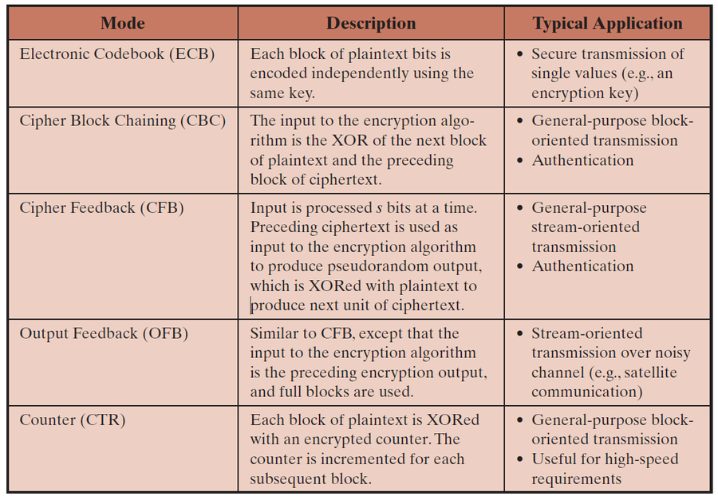
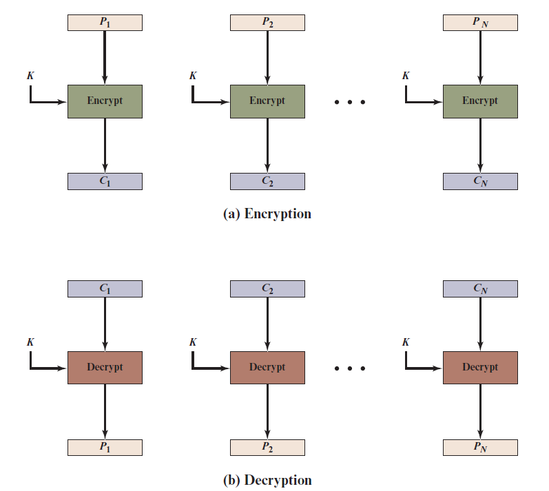
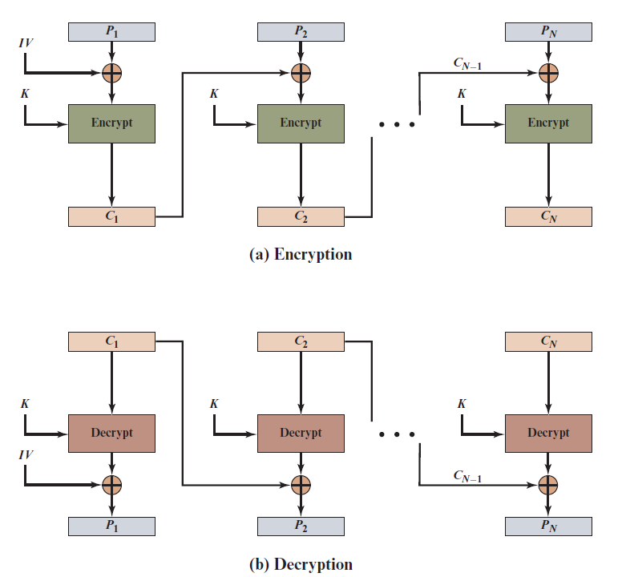
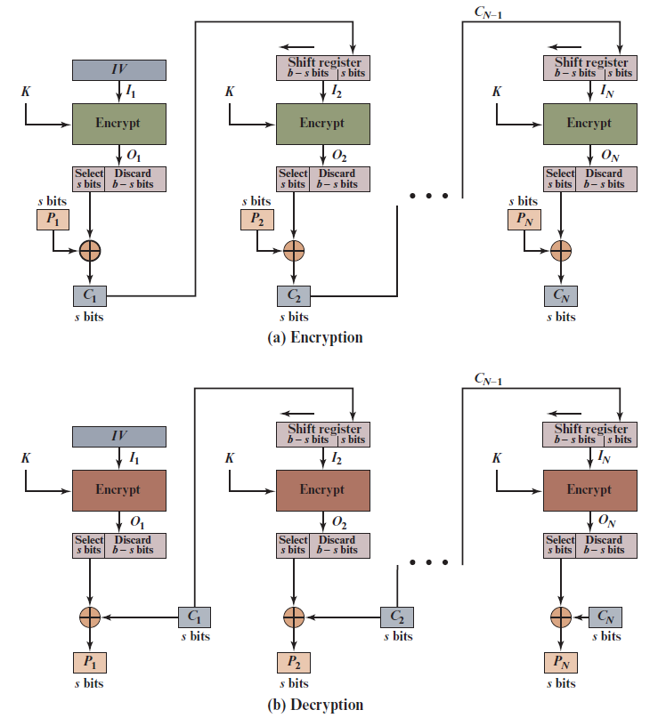
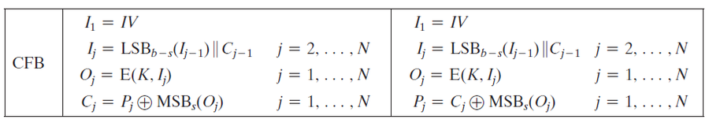
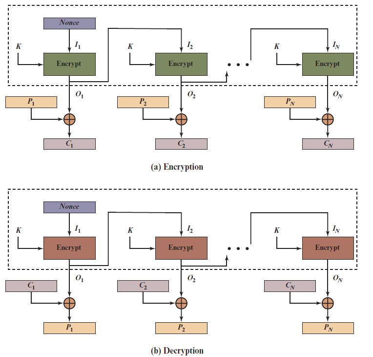
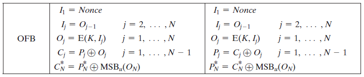
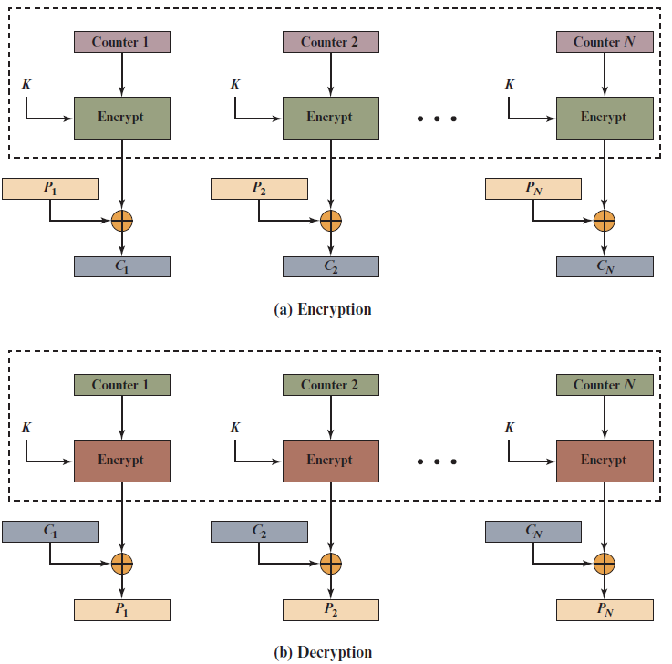

Modes of Operation
Block cipher hanya menangani 1 blok. Untuk pesan panjang dipakai mode of operation (NIST SP 800-38A) — ada 5: ECB, CBC, CFB, OFB, CTR. Notasi: P = plaintext, C = ciphertext, E = enkripsi block cipher, D = dekripsi, K = key, IV = nilai awal.
A. Kenapa butuh mode?
Block cipher menerima satu blok teks berukuran b bit dan satu kunci, lalu menghasilkan satu blok ciphertext b bit. Kalau pesan lebih panjang dari satu blok, ada banyak blok yang dienkripsi dengan kunci yang sama, dan di situ muncul masalah keamanan. Mode of operation = teknik untuk memakai block cipher pada urutan blok data atau aliran data. NIST menetapkan 5 mode.

| Mode | Singkatan dari | Cara singkat | Pemakaian umum (slide) |
|---|---|---|---|
| ECB | Electronic Codebook | tiap blok dienkripsi sendiri-sendiri | mengirim data kecil, mis. kunci enkripsi |
| CBC | Cipher Block Chaining | blok dirantai: di-XOR dengan ciphertext sebelumnya | transmisi data per blok, autentikasi |
| CFB | Cipher Feedback | data diproses seperti stream, ciphertext sebelumnya jadi masukan | transmisi stream umum, autentikasi |
| OFB | Output Feedback | mirip CFB, tetapi yang diumpan balik adalah keluaran cipher | stream lewat kanal yang berisik (mis. satelit) |
| CTR | Counter | mengenkripsi penghitung (counter) | transmisi umum, kebutuhan kecepatan tinggi |
Pemakaian block cipher (slide)
- Data encryption: password, data kartu kredit.
- File dan disk encryption: BitLocker, TrueCrypt.
- VPN: mengamankan data antar dua perangkat lewat internet.
- SSL/TLS: data antara browser dan server.
- Digital signature.
B. ECB (Electronic Codebook)

Cj = E(K, Pj)Dekripsi:
Pj = D(K, Cj)- Pesan dipecah jadi blok b bit (blok terakhir diberi padding bila kurang). Tiap blok dienkripsi dengan kunci yang sama.
- Disebut "codebook" karena untuk satu kunci, tiap blok plaintext punya satu ciphertext yang pasti, seperti buku kode.
| Kelebihan | Kelemahan |
|---|---|
| Paling sederhana. Tiap blok bisa diproses terpisah. | Blok plaintext yang sama menghasilkan ciphertext yang sama, jadi pola pengulangan terlihat (terutama pada gambar atau pesan yang sedikit berubah). Penyerang bisa memakai analisis codebook. Blok saling independen. |
C. CBC (Cipher Block Chaining)

C1 = E(K, P1 ⊕ IV)Blok berikutnya:
Cj = E(K, Pj ⊕ Cj−1)Dekripsi:
P1 = D(K, C1) ⊕ IV, lalu Pj = D(K, Cj) ⊕ Cj−1IV = Initial Value (nilai awal), dipakai di blok pertama karena belum ada ciphertext sebelumnya.
- Blok-blok dirantai: masukan enkripsi = plaintext sekarang XOR ciphertext sebelumnya. Akibatnya plaintext yang sama menghasilkan ciphertext berbeda, pola tidak terlihat.
- Tiap ciphertext bergantung pada semua blok sebelumnya. Perubahan satu blok pesan mengubah ciphertext blok itu dan semua blok sesudahnya.
| Catatan penting | Penjelasan |
|---|---|
| IV harus diketahui pengirim dan penerima | kalau IV dikirim polos, penyerang bisa mengubah bit blok pertama dan menyesuaikan IV. Jadi IV harus tetap (fixed) atau dikirim terenkripsi (mode ECB) sebelum pesan. |
| Blok terakhir pendek | diisi (padding) dengan nilai bukan-data (mis. nol) atau dengan jumlah padding. Contoh slide: [b1 b2 b3 0 0 0 0 5] = 3 byte data, lalu 5 byte padding (angka 5 menandakan jumlah padding). |
D. CFB (Cipher Feedback)


Oj = E(K, Ij), dengan I1 = IV dan masukan berikutnya dibentuk dari ciphertext sebelumnya.Enkripsi:
Cj = Pj ⊕ MSBs(Oj)Dekripsi:
Pj = Cj ⊕ MSBs(Oj)MSBs = ambil s bit paling kiri. Standar membolehkan s = 1, 8, 64, atau sesuai kebutuhan.
- Pesan dianggap sebagai aliran bit. Hasil cipher di-XOR dengan pesan, lalu hasilnya diumpan balik untuk tahap berikutnya.
- Pemakaian: enkripsi data stream, autentikasi.
| Kelebihan | Kelemahan |
|---|---|
| Cocok kalau data datang per bit atau per byte. Mode stream yang paling umum. | Harus berhenti sebentar untuk enkripsi blok setelah tiap n bit. Error merambat ke beberapa blok sesudahnya. Cipher selalu dipakai dalam mode enkripsi di kedua ujung (E, bukan D). Enkripsi tidak bisa paralel, tapi dekripsi bisa paralel dan tahan kehilangan blok. |
E. OFB (Output Feedback)


I1 = Nonce (nilai awal)Oj = E(K, Ij) dan Ij = Oj−1Enkripsi:
Cj = Pj ⊕ OjDekripsi:
Pj = Cj ⊕ Oj (sama persis dengan enkripsi)- Mirip CFB, tapi yang diumpan balik adalah keluaran cipher (bukan ciphertext). Umpan balik tidak bergantung pada pesan, jadi bisa dihitung lebih dulu.
- Pemakaian: enkripsi stream lewat kanal yang berisik (noisy).
| Kelebihan | Kelemahan |
|---|---|
| Error bit tidak merambat ke blok lain. | Variasi dari cipher Vernam, jadi jangan pernah memakai ulang urutan yang sama (key + IV). Pengirim dan penerima harus tetap sinkron. Lebih rentan terhadap serangan modifikasi aliran pesan dibanding CFB. |
F. CTR (Counter)

Cj = Pj ⊕ E(K, Counterj)Dekripsi:
Pj = Cj ⊕ E(K, Counterj) (urutan counter sama)Counter biasanya mulai dari satu nilai dan naik 1 tiap blok.
- Mirip OFB, tetapi yang dienkripsi adalah nilai counter, bukan umpan balik.
- Counter dan kunci tidak boleh dipakai ulang untuk blok berbeda. Tiap blok harus punya nilai counter berbeda.
- Pemakaian: enkripsi jaringan berkecepatan tinggi (diusulkan tahun 1979, dipakai di ATM dan IPsec).
Kelebihan CTR (6 hal)
| Kelebihan | Artinya |
|---|---|
| Hardware efficiency | bisa diproses paralel pada banyak blok |
| Software efficiency | memanfaatkan prosesor paralel |
| Preprocessing | keluaran enkripsi bisa disiapkan lebih dulu, karena tidak bergantung plaintext/ciphertext |
| Random access | blok ke-i bisa diproses langsung tanpa menunggu blok sebelumnya |
| Provable security | terbukti minimal sama aman dengan mode lain |
| Simplicity | hanya butuh algoritma enkripsi, tidak perlu algoritma dekripsi |
| Kelemahan CTR |
|---|
| Butuh counter yang sinkron di pengirim dan penerima. Kalau sinkronisasi hilang, hasil dekripsi menjadi salah. |
G. Perbandingan 5 mode
| Mode | Butuh IV/nonce/counter? | Blok sama → ciphertext sama? | Enkripsi paralel? | Catatan |
|---|---|---|---|---|
| ECB | tidak | ya (lemah) | ya | pola bocor |
| CBC | IV | tidak | tidak (berantai) | ciphertext bergantung semua blok sebelumnya |
| CFB | IV | tidak | tidak | error merambat; dekripsi bisa paralel |
| OFB | nonce | tidak | tidak (tapi keystream bisa disiapkan dulu) | error tidak merambat; jangan reuse key+IV |
| CTR | counter | tidak | ya | random access; counter harus sinkron |
H. Latihan hitung (opsional, tidak dari slide)
Latihan ini memakai cipher mini E(x) = x XOR kunci supaya kamu bisa memahami cara kerja tiap mode lewat angka kecil. Boleh dilewati.
1) Cipher mini E(x)=x⊕0110. Plaintext 3 blok: 1010 1010 0011. Hitung ciphertext mode ECB.
Lihat jawaban
1100 1100 0101. Blok 1 dan 2 sama (1010 ⊕ 0110 = 1100), jadi ciphertext-nya juga sama: pola bocor.2) Plaintext dan key sama seperti soal 1. Hitung CBC dengan IV = 1001.
Lihat jawaban
C₁ = E(1010 ⊕ 1001) = E(0011) = 0101.C₂ = E(1010 ⊕ 0101) = E(1111) = 1001.
C₃ = E(0011 ⊕ 1001) = E(1010) = 1100.
Hasil: 0101 1001 1100.
3) Dekripsi CBC: key 0110, IV = 1001, ciphertext 0101 1001 1100. Cari plaintext-nya.
Lihat jawaban
P₁ = D(0101) ⊕ IV = 0011 ⊕ 1001 = 1010.P₂ = D(1001) ⊕ 0101 = 1111 ⊕ 0101 = 1010.
P₃ = D(1100) ⊕ 1001 = 1010 ⊕ 1001 = 0011.
Hasil: 1010 1010 0011 (sama dengan plaintext asal).
4) Hitung CFB (blok penuh) dengan IV = 0101, key 0110, plaintext 1010 1010 0011.
Lihat jawaban
E(IV) = E(0101) = 0011, C₁ = 1010 ⊕ 0011 = 1001.E(C₁) = 1111, C₂ = 1010 ⊕ 1111 = 0101.
E(C₂) = 0011, C₃ = 0011 ⊕ 0011 = 0000.
Hasil: 1001 0101 0000.
5) Dekripsi CFB: key 0110, IV = 0101, ciphertext 1001 0101 0000. Cari plaintext.
Lihat jawaban
Di CFB, dekripsi tetap memakai E (bukan D).P₁ = 1001 ⊕ E(0101) = 1001 ⊕ 0011 = 1010.
P₂ = 0101 ⊕ E(1001) = 0101 ⊕ 1111 = 1010.
P₃ = 0000 ⊕ E(0101) = 0000 ⊕ 0011 = 0011.
Hasil: 1010 1010 0011.
6) Hitung OFB dengan IV = 0101, key 0110, plaintext 1010 1010 0011. Apa yang menarik dari keystream-nya?
Lihat jawaban
O₁ = E(0101) = 0011, O₂ = E(0011) = 0101, O₃ = E(0101) = 0011.C = P ⊕ O → 1001, 1111, 0000. Hasil: 1001 1111 0000.
Keystream bergantian 0011, 0101, 0011: itu karena cipher mini x⊕K berulang tiap 2 kali (E(E(x)) = x). Pada cipher asli tidak begitu; yang penting: keystream tidak bergantung pada plaintext.
7) Dekripsi OFB: key 0110, IV = 0101, ciphertext 1001 1111 0000. Cari plaintext.
Lihat jawaban
Keystream sama: 0011, 0101, 0011.P = C ⊕ O → 1001 ⊕ 0011 = 1010, 1111 ⊕ 0101 = 1010, 0000 ⊕ 0011 = 0011.
Hasil: 1010 1010 0011. Enkripsi dan dekripsi OFB prosesnya sama (XOR dengan keystream).
8) Hitung CTR dengan counter awal 1110 (naik 1 tiap blok), key 0110, plaintext 1010 1010 0011.
Lihat jawaban
Counter: 1110, 1111, 0000 (setelah 1111 kembali ke 0000 karena 4 bit).E(counter): 1000, 1001, 0110.
C = P ⊕ E(counter) → 0010 0011 0101.
9) Satu bit di ciphertext C₁ rusak saat dikirim. Blok plaintext mana yang rusak setelah dekripsi di mode CBC, OFB, dan CTR?
Lihat jawaban
CBC: P₁ rusak total (karena lewat D) dan P₂ rusak 1 bit di posisi yang sama (karena XOR dengan C₁); P₃ dan seterusnya aman.OFB: hanya P₁ yang rusak 1 bit di posisi yang sama (keystream tidak terpengaruh).
CTR: hanya P₁ yang rusak 1 bit di posisi yang sama.
10) Sebuah sistem butuh mengenkripsi file besar dan dibaca acak di bagian tengah (random access), serta enkripsi diproses paralel. Mode apa yang cocok dan kenapa bukan CBC?
Lihat jawaban
CTR. Tiap blok hanya butuh counter-nya sendiri, jadi blok ke-i bisa dihitung langsung dan semua blok bisa diproses paralel. CBC enkripsi harus berurutan karena Ci butuh Ci−1.11) Kenapa key+IV tidak boleh dipakai ulang di OFB (dan counter tidak boleh berulang di CTR)?
Lihat jawaban
Keystream-nya jadi sama. Kalau dua pesan dienkripsi dengan keystream sama, C₁ ⊕ C₂ = P₁ ⊕ P₂ (keystream hilang), sehingga penyerang bisa mendapat informasi tentang plaintext.12) Pesan 20 byte dienkripsi dengan block cipher 8 byte memakai CBC. Berapa blok dan berapa byte padding (skema: byte terakhir = jumlah padding)?
Lihat jawaban
20 ÷ 8 → 3 blok (24 byte). Padding = 24 − 20 = 4 byte, berisi [… 0 0 0 4] di akhir (3 byte nol + angka 4 sebagai penanda jumlah padding), sesuai format contoh padding di atas.Tes diri (tutup jawaban dulu, coba jawab sendiri)
1) Sebutkan 5 mode of operation beserta kepanjangannya.
Lihat jawaban
ECB (Electronic Codebook), CBC (Cipher Block Chaining), CFB (Cipher Feedback), OFB (Output Feedback), CTR (Counter).2) Apa kelemahan utama ECB?
Lihat jawaban
Blok plaintext yang sama menghasilkan ciphertext yang sama, sehingga pola pengulangan terlihat.3) Tuliskan rumus enkripsi dan dekripsi CBC.
Lihat jawaban
C1 = E(K, P1 XOR IV); Cj = E(K, Pj XOR C(j-1)). Dekripsi: P1 = D(K, C1) XOR IV; Pj = D(K, Cj) XOR C(j-1).4) Apa fungsi IV pada CBC, dan apa risikonya kalau IV dikirim polos?
Lihat jawaban
IV dipakai untuk blok pertama karena belum ada ciphertext sebelumnya. Kalau dikirim polos, penyerang bisa mengubah bit blok pertama dan menyesuaikan IV. Jadi IV harus tetap atau dikirim terenkripsi.5) Pada contoh padding [b1 b2 b3 0 0 0 0 5], apa arti angka 5?
Lihat jawaban
Jumlah byte padding (5 byte padding termasuk angka 5 itu sendiri).6) Apa beda CFB dan OFB?
Lihat jawaban
CFB: ciphertext diumpan balik, error merambat. OFB: keluaran cipher diumpan balik, error tidak merambat, dan umpan balik bisa dihitung lebih dulu.7) Mode mana yang cocok untuk kanal yang berisik (noisy), seperti satelit?
Lihat jawaban
OFB, karena error bit tidak merambat.8) Sebutkan 3 kelebihan CTR.
Lihat jawaban
Bisa paralel, random access, preprocessing, hanya butuh algoritma enkripsi, provable security (pilih tiga).9) Apa kelemahan CTR?
Lihat jawaban
Butuh counter yang sinkron di pengirim dan penerima. Kalau sinkronisasi hilang, dekripsi salah.10) Kenapa key+IV tidak boleh dipakai ulang di OFB?
Lihat jawaban
Karena keystream yang sama dipakai lagi (mirip cipher Vernam), sehingga pola bisa dibongkar.11) Mode mana yang memakai block cipher hanya dalam arah enkripsi?